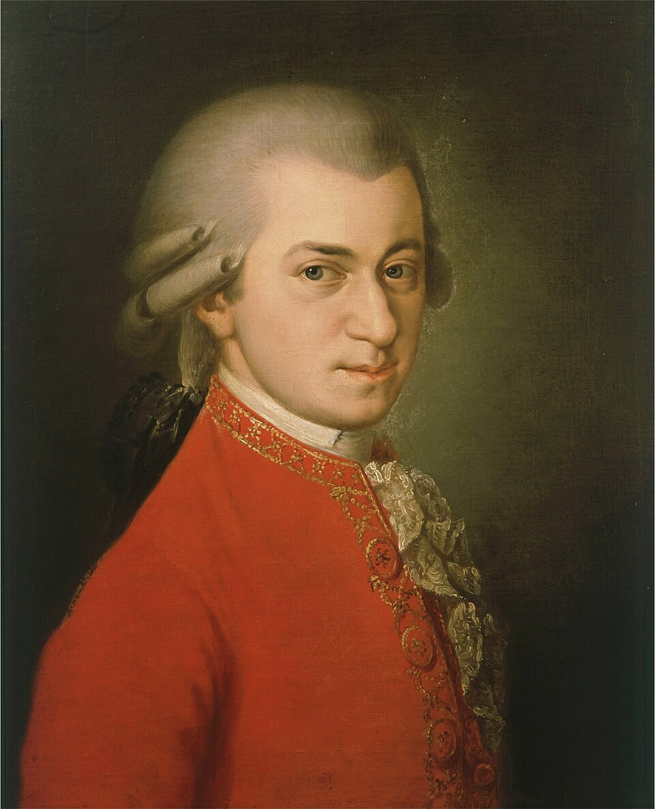

Motsart tinglash aqlli qiladimi?
1990-yillarda “Motsart effekti” butun dunyoni zabt etdi: chaqaloqlar uchun disklar, maktablarda klassik musiqa. Fan nima topdi?

1993-yilda Nature jurnalida Frensis Rausher va hamkasblarining qisqa maqolasi chiqdi. Talabalar Motsart sonatasini 10 daqiqa tinglagach, fazoviy fikrlash vazifalarida biroz yaxshiroq natija ko'rsatgan. Ta'sir vaqtinchalik edi va faqat bitta turdagi vazifaga tegishli edi.
Lekin ommaviy axborot vositalari buni “Motsart sizni aqlli qiladi” deb talqin qildi. Chaqaloqlar uchun klassik musiqa disklari sotildi, ba'zi joylarda esa bu g'oya rasmiy dasturlarga ham kirdi.

Hammasini yig'ib ko'rganda
2010-yilda Vena universiteti olimlari Yakob Pitshnig va hamkasblari bu mavzudagi 40 ga yaqin tadqiqotni (3000 dan ortiq ishtirokchi) birlashtirib tahlil qilishdi. Maqolaning nomi ham kulgili edi: “Mozart effect — Shmozart effect”. Xulosa: aynan Motsart tinglash fazoviy qobiliyatni oshiradi degan da'voni tasdiqlovchi dalil yo'q.
Kuzatilgan kichik ta'sir, ehtimol, musiqa umuman kayfiyatni ko'tarishi va odamni “uyg'otishi” bilan bog'liq — buni Motsart ham, boshqa yoqimli musiqa ham bera oladi.
Tinglash — dam olish. Chalish — mashq. Faqat ikkinchisi yangi ko'nikma beradi.
O'qish paytida musiqa-chi?
- So'zli musiqadan ehtiyot bo'ling. Matn o'qiyotganda qo'shiq so'zlari raqobatlashadi.
- Kayfiyat uchun — mayli. Tanaffusda sevimli musiqa energiya beradi.
- Jimjitlikni sinab ko'ring. Murakkab masala uchun ko'pincha eng yaxshi fon — sukunat.
- Musiqa chalishni o'rganing. Asbob chalish — haqiqiy, uzoq muddatli mashq.
Manba: Rauscher, Shaw & Ky, “Music and spatial task performance”, Nature, 1993; Pietschnig, Voracek & Formann, “Mozart effect–Shmozart effect: A meta-analysis”, Intelligence, 2010. Matn — o'zbek tilidagi erkin qisqacha bayon.